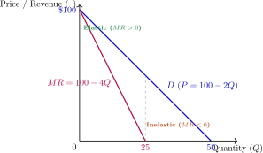

8 Chapter 8: Monopoly, Market Power, and Price Discrimination
This chapter develops the economic theory of pure monopoly, market power, and price discrimination aligned with the Eric Chiang Microeconomics principles benchmark. Students examine how barriers to entry create and sustain monopolies, why a single-price monopolist’s marginal revenue lies strictly below market demand, how profit maximization (\(MR = MC\)) reduces output and creates deadweight loss relative to perfect competition, how regulators address natural monopolies, and how first-, second-, and third-degree price discrimination reshape profits and social welfare.
8.1 Barriers to Entry and Monopoly Revenue Mechanics
Conceptual Introduction
Imagine being the only coffee kiosk allowed inside an airport terminal after security, or the only pharmaceutical company legally permitted to manufacture a newly approved medication. At the opposite extreme from perfect competition stands a pure monopoly: a market with a single seller offering a unique product with no close substitutes, protected from new rivals by insurmountable barriers to entry. Without entry barriers, high economic profits would quickly attract competing firms and erode the monopoly’s market power.
Barriers to entry arise from four primary sources:
- Exclusive control of a key resource: A single firm owns or controls an essential input needed for production.
- Government-created legal monopolies: Patents, copyrights, and exclusive public franchises legally restrict competitors from copying a product or serving a territory.
- Network effects: A platform or service becomes more valuable to each user as more people join, making it difficult for smaller entrants to draw users away.
- Natural monopoly (economies of scale): Massive fixed infrastructure costs cause Long-Run Average Total Cost (\(LRATC\)) to decline continuously across the entire relevant range of market demand, so one large firm can supply the entire market at lower average cost than two or more smaller competitors.
Because a single-price monopolist is the entire industry, it faces the downward-sloping market demand curve rather than a horizontal price line. Unlike a competitive price taker, a monopolist cannot sell extra units at a fixed market price. To sell one additional unit, it must lower its price—and under single pricing, that lower price applies to all units sold. Every additional sale therefore triggers two opposing effects on Total Revenue (\(TR = P \times Q\)):
- Output effect (\(+P\)): Selling one more unit adds the new unit’s price to total revenue.
- Price effect (\(-Q \cdot |\Delta P|\)): Lowering the price reduces revenue earned on all previous units that could have been sold at the higher price.
Because the price effect is negative for every unit beyond the first, a single-price monopolist’s Marginal Revenue (\(MR\)) always lies strictly below its demand curve (\(MR < P\)) for all positive quantities (\(Q > 0\)).
Two everyday industries illustrate why societies both regulate and intentionally create monopolies. A municipal water or electric distribution grid exemplifies a natural monopoly: stringing two competing sets of high-voltage power lines or water mains down every neighborhood street would waste billions in duplicate fixed capital, so one regulated utility serves the region at lower average cost. By contrast, a biotech firm granted a 20-year U.S. utility patent on a breakthrough therapy enjoys a temporary legal monopoly. Policymakers accept higher patent-protected prices during the patent window as a deliberate trade-off to incentivize risky research and development that might never occur if rivals could copy the formula immediately.
Visual Representation
Figure 1 illustrates why a linear inverse demand curve \(P = a - bQ\) generates a Marginal Revenue curve \(MR = a - 2bQ\) that starts at the same vertical choke price \(a\) but falls twice as steeply, crossing the horizontal axis at exactly half the choke quantity.

Students often assume a monopolist wants demand to be inelastic so it can raise prices freely. In fact, a profit-maximizing monopolist with non-negative marginal cost (\(MC \ge 0\)) never produces in the inelastic range (\(Q > 25\) in Figure 1). In that region, \(MR < 0\): cutting output by one unit both increases total revenue and reduces total cost, strictly raising profit until the firm moves back into the elastic upper half of demand where \(MR > 0\).
Mathematical Foundation (Algebra Level)
Assuming a linear inverse market demand curve \(P(Q) = a - bQ\) (with \(a > 0\) and \(b > 0\)) and single pricing across all buyers, Total Revenue is \(TR = P \cdot Q = aQ - bQ^2\), and Marginal Revenue shares the intercept \(a\) with twice the slope:
\[ MR(Q) = a - 2bQ \]
Setting \(MR(Q) = 0\) shows that total revenue is maximized at the midpoint quantity \(Q = \frac{a}{2b}\), which is exactly half the horizontal choke quantity \(Q_{\text{choke}} = \frac{a}{b}\).
Problem: A patented medical diagnostic device faces linear inverse market demand \(P = 120 - 3Q\), where \(P\) is price in dollars and \(Q\) is units sold per week.
- Write the Marginal Revenue equation \(MR(Q)\).
- Complete a discrete revenue schedule for \(Q = 9, 10, 11, 12\) and decompose the revenue change from \(Q = 10\) to \(Q = 11\) into its output effect and price effect.
Step-by-Step Solution:
- Write the Marginal Revenue Equation: Keep the vertical intercept (\(120\)) and double the slope coefficient (\(2 \times 3 = 6\)):
\[ MR(Q) = \mathbf{120 - 6Q} \]
- Compute Price, Total Revenue, and Discrete Marginal Revenue (\(\Delta TR\)): \begin{center}
\end{center} Moving from \(Q = 10\) to \(Q = 11\) increases Total Revenue by \(\Delta TR = \$957 - \$900 = \mathbf{+\$57}\) (matching the continuous formula evaluated at the midpoint \(Q = 10.5\): \(MR(10.5) = 120 - 6(10.5) = \$57\)). This net gain equals:
- Output effect: \(+\$87\) earned from selling the 11th unit.
- Price effect: \(-10\text{ prior units} \times \$3\text{ discount} = -\$30\) lost on earlier units.
- Net Marginal Revenue: \(\$87 - \$30 = \mathbf{+\$57}\).
Takeaway: Because selling the 11th unit requires discounting all 10 prior units by \(\$3\), discrete Marginal Revenue (\(\$57\)) sits \(\$30\) below the market price (\(\$87\)).
Note for Economics Majors and Quantitative Students: For any differentiable inverse demand function \(P(Q)\) with \(P'(Q) < 0\), Total Revenue is \(TR(Q) = P(Q)\cdot Q\). Differentiating with respect to \(Q\) via the product rule yields:
\[ MR(Q) = \frac{d(TR)}{dQ} = \underbrace{P(Q)}_{\text{Output effect}\,(>0)} + \underbrace{Q\,\frac{dP}{dQ}}_{\text{Price effect}\,(<0)} < P(Q) \quad \text{for all } Q > 0. \]
For the linear case \(P(Q) = a - bQ\), we have \(\frac{dP}{dQ} = -b\), so \(MR(Q) = (a - bQ) + Q(-b) = a - 2bQ\).
8.2 Monopoly Profit Maximization and Deadweight Loss
Conceptual Introduction
Like every profit-maximizing firm, a single-price monopolist expands output as long as the extra revenue from an additional unit exceeds its extra cost (\(MR > MC\)) and stops when the two are equal. Finding the monopoly outcome therefore follows a strict two-step rule:
- Choose Quantity (\(Q_M\)): Produce the output level where Marginal Revenue equals Marginal Cost (\(MR = MC\)).
- Choose Price (\(P_M\)): Move vertically up from \(Q_M\) to the demand curve to read the highest price consumers are willing to pay for that quantity.
Because \(MR < P\), setting \(MR = MC\) guarantees that the monopolist charges a price strictly above marginal cost (\(P_M > MC\)) and restricts output strictly below the socially efficient competitive quantity (\(Q_M < Q_C\), where \(P = MC\)). Those missing units between \(Q_M\) and \(Q_C\) represent mutually beneficial trades where consumers value the good more than it costs society to produce (\(MB > MC\)), yet the monopolist withholds them to keep prices elevated. The lost surplus from these unproduced units is Deadweight Loss (\(DWL\)).
When a firm is a natural monopoly, breaking it into smaller competitors would push everyone up onto higher average costs. Policymakers instead rely on public regulation, facing a classic policy dilemma:
- Marginal-Cost Pricing (\(P = MC\)): Restores allocative efficiency (\(DWL = \$0\)), but because \(LRATC\) is still falling, \(MC < ATC\)—so the utility suffers an economic loss and requires a taxpayer subsidy to stay open.
- Average-Cost (Fair-Return) Pricing (\(P = ATC\)): Allows the utility to break even (\(\pi = \$0\)) without a subsidy while cutting prices and shrinking deadweight loss substantially compared to unregulated monopoly.
Consider a hypothetical regional hospital operating an advanced MRI scanner with \(\$900{,}000\) in annual fixed equipment and staffing costs and a constant \(\$100\) marginal cost per scan. At \(3{,}000\) scans per year, Average Total Cost is \(\$900{,}000 / 3{,}000 + \$100 = \$400\) per scan; at \(9{,}000\) scans per year, \(ATC\) drops to \(\$900{,}000 / 9{,}000 + \$100 = \$200\) per scan. Spreading large fixed costs over higher volume continuously lowers \(ATC\)—the hallmark of natural monopoly. If the hospital faces no nearby rival and prices where \(MR = MC\), patients face a markup well above \(\$100\) and medically valuable scans go unperformed. Conversely, forcing the hospital to charge marginal cost (\(\$100\)) would leave the entire \(\$900{,}000\) fixed cost uncovered, illustrating why regulators often use fair-return pricing (\(P = ATC\)) or two-part tariffs instead.
Visual Representation
Figure 2 plots the single-price monopoly equilibrium \((Q_M, P_M)\) against the competitive benchmark \((Q_C, P_C)\) under constant marginal cost \(MC = ATC = \$20\), decomposing total potential social surplus into Consumer Surplus, Monopoly Profit, and Deadweight Loss.
- Never read the monopoly price from the \(MR = MC\) crossing: The \(MR = MC\) intersection only determines the profit-maximizing quantity (\(Q_M\)). Once you locate \(Q_M\) on the horizontal axis, move straight up to the Demand curve to read the price (\(P_M\)) buyers actually pay.
- Monopoly does not guarantee positive economic profit: Being the sole seller lets a firm choose the best point on the demand curve, not ignore costs. If market demand is weak and \(P_M < ATC\) at \(Q_M\), even a pure monopolist suffers an economic loss (and shuts down in the short run if \(P_M < AVC\)).

Mathematical Foundation (Algebra Level)
Assuming linear inverse demand \(P = a - bQ\), constant marginal cost \(MC = c\) (with \(0 \le c < a\)), and zero fixed cost (\(ATC = MC = c\)):
\[ MR = MC \implies a - 2bQ_M = c \implies Q_M = \frac{a - c}{2b}, \qquad Q_C = \frac{a - c}{b} = 2Q_M \]
Notice that with linear demand and constant marginal cost, a single-price monopolist always cuts output to exactly half of the competitive output. The Harberger deadweight loss triangle is:
\[ DWL = \frac{1}{2}(Q_C - Q_M)(P_M - MC) \]
Problem: Using the linear monopoly model plotted in Figure 2, suppose inverse market demand is \(P = 100 - 2Q\), Marginal Revenue is \(MR = 100 - 4Q\), and Marginal Cost is constant at \(MC = \$20\) (with zero fixed cost, so \(ATC = \$20\)). Compute \(Q_M\), \(P_M\), monopoly economic profit \(\pi_M\), monopoly Consumer Surplus \(CS_M\), the competitive benchmark \((Q_C, P_C, CS_C)\), and Deadweight Loss (\(DWL\)).
Step-by-Step Solution:
- Solve for Monopoly Output (\(Q_M\)) and Price (\(P_M\)): Set \(MR = MC\):
\[ 100 - 4Q_M = 20 \implies 4Q_M = 80 \implies Q_M = \mathbf{20\text{ units}} \]
Substitute \(Q_M = 20\) into the inverse demand curve:
\[ P_M = 100 - 2(20) = \mathbf{\$60} \]
- Compute Monopoly Profit (\(\pi_M\)) and Consumer Surplus (\(CS_M\)):
\[ \pi_M = (P_M - ATC) \times Q_M = (\$60 - \$20) \times 20 = \$40 \times 20 = \mathbf{\$800} \]
\[ CS_M = \frac{1}{2} \times Q_M \times (a - P_M) = \frac{1}{2} \times 20 \times (\$100 - \$60) = \mathbf{\$400} \]
- Find the Competitive Benchmark (\(Q_C, P_C, CS_C\)) and Deadweight Loss (\(DWL\)): Set \(P = MC\):
\[ 100 - 2Q_C = 20 \implies 2Q_C = 80 \implies Q_C = \mathbf{40\text{ units}}, \qquad P_C = \mathbf{\$20} \]
Under constant \(MC = \$20\), competitive Producer Surplus is \(\$0\), so total competitive surplus equals Consumer Surplus:
\[ CS_C = \frac{1}{2} \times 40 \times (\$100 - \$20) = \mathbf{\$1{,}600} \]
Compute the Deadweight Loss triangle:
\[ DWL = \frac{1}{2} \times (40 - 20) \times (\$60 - \$20) = \frac{1}{2} \times 20 \times \$40 = \mathbf{\$400} \]
Surplus Conservation Check: \(CS_M + \pi_M + DWL = \$400 + \$800 + \$400 = \$1{,}600 = CS_C\). Compared to perfect competition, monopoly cuts output in half (from \(40\) to \(20\)), triples the price (from \(\$20\) to \(\$60\)), transfers \(\$800\) of consumer surplus into monopoly profit, and destroys \(\$400\) in deadweight loss.
Note for Economics Majors and Quantitative Students: The monopolist solves \(\max_{Q \ge 0} \pi(Q) = TR(Q) - TC(Q)\). At an interior maximum:
\[ \text{FOC: } \pi'(Q) = MR(Q) - MC(Q) = 0 \implies MR(Q_M) = MC(Q_M), \qquad \text{SOC: } \pi''(Q_M) = MR'(Q_M) - MC'(Q_M) < 0. \]
The second-order condition requires \(MC\) to intersect \(MR\) from below. In our linear example, \(\pi''(Q) = -4 - 0 = -4 < 0\), confirming a unique global maximum. Total deadweight loss is the definite integral of net marginal social benefit over the unproduced units:
\[ DWL = \int_{Q_M}^{Q_C} \big[P(Q) - MC(Q)\big]\,dQ = \int_{20}^{40} \big[(100 - 2Q) - 20\big]\,dQ = \Big[80Q - Q^2\Big]_{20}^{40} = 1{,}600 - 1{,}200 = \$400. \]
8.3 Price Discrimination and Market Power
Conceptual Introduction
So far, we have assumed the monopolist charges every buyer the exact same price. Yet firms with market power can often earn higher profits—and sometimes expand market access—by practicing price discrimination: selling the exact same good or service to different customers at different prices not justified by cost differences. Successful price discrimination requires three conditions:
- Market power: The firm must face a downward-sloping demand curve (not be a competitive price taker).
- Market segmentation: The firm must be able to separate buyers according to their willingness to pay (price elasticity of demand).
- Prevention of arbitrage: Buyers who receive a lower price must be unable to resell the product profitably to buyers charged a higher price.
Economists classify price discrimination into three degrees:
- First-Degree (Perfect) Price Discrimination: Charging every individual buyer their exact maximum willingness to pay. Because the firm no longer has to discount prior units to make another sale, \(MR = P\). Output expands all the way to the competitive level (\(Q_C\)) and Deadweight Loss falls to zero—but the monopolist captures \(100\%\) of Total Social Surplus (\(CS = \$0\)).
- Second-Degree Price Discrimination: Offering quantity discounts or tiered product menus (such as bulk warehouse packs or airline cabin classes) so customers self-select based on usage or preferences.
- Third-Degree Price Discrimination: Dividing customers into observable groups (such as verified students, seniors, or business travelers) and charging a higher price to the group with less elastic (more price-insensitive) demand and a lower price to the group with more elastic (more price-sensitive) demand.
Discounts and Airline Saturday-Night Stays} Software companies such as Adobe and Microsoft require verified email credentials to unlock steep academic discounts while charging full commercial rates to corporate teams. Account-level license binding prevents arbitrage (students cannot legally resell their subscription to an enterprise). Similarly, airlines separate time-sensitive business travelers (less elastic demand) from flexible leisure travelers (more elastic demand) through advance-purchase rules, non-refundable fares, and weekend-stay pricing—all while flying both passengers on the exact same aircraft.
Visual Representation
Figure 3 illustrates third-degree price discrimination for a campus theater with constant \(MC = \$4\) per ticket, equating \(MR_i = MC\) separately for the less elastic general public and more elastic student segments.

Not necessarily. First, remember that with \(MC > 0\), a profit-maximizing firm still operates on the elastic region (\(|\varepsilon_d| > 1\)) of both segments—one segment is simply less elastic than the other. Second, while price discrimination raises prices for less elastic buyers and transfers surplus to the firm, it lowers prices for more elastic buyers (such as students or seniors). Whenever discounts bring previously priced-out buyers into the market, total output expands and Deadweight Loss can fall.
Mathematical Foundation (Algebra Level)
Under third-degree price discrimination with constant marginal cost \(MC\) and no resale between segments, the firm maximizes total profit by equating Marginal Revenue to Marginal Cost separately in each market:
\[ MR_1(Q_1^*) = MC, \qquad MR_2(Q_2^*) = MC \]
Problem: A campus theater faces a constant Marginal Cost of \(MC = \$4\) per ticket (with zero fixed cost) and uses photo IDs to prevent resale between two linear demand segments (plotted in Figure 3):
General Public: \(P_1 = 28 - 2Q_1 \implies MR_1 = 28 - 4Q_1\)
Students: \(P_2 = 16 - Q_2 \implies MR_2 = 16 - 2Q_2\)
Find the profit-maximizing price, quantity, and profit for each segment under third-degree price discrimination.
Compare total profit under price discrimination against charging a single uniform price to both groups.
Step-by-Step Solution:
Segmented Pricing (\(MR_i = MC\)):
General Public (\(MR_1 = 4\)):
\[ 28 - 4Q_1 = 4 \implies 4Q_1 = 24 \implies Q_1^* = \mathbf{6\text{ tickets}}, \qquad P_1^* = 28 - 2(6) = \mathbf{\$16} \]
Segment 1 profit: \(\pi_1 = (\$16 - \$4) \times 6 = \mathbf{\$72}\). * Students (\(MR_2 = 4\)):
\[ 16 - 2Q_2 = 4 \implies 2Q_2 = 12 \implies Q_2^* = \mathbf{6\text{ tickets}}, \qquad P_2^* = 16 - 6 = \mathbf{\$10} \]
Segment 2 profit: \(\pi_2 = (\$10 - \$4) \times 6 = \mathbf{\$36}\).
Combined price-discriminating output is \(Q_{\text{PD}} = 6 + 6 = \mathbf{12\text{ tickets}}\), and total profit is \(\pi_{\text{PD}} = \$72 + \$36 = \mathbf{\$108}\).
- Single-Price Benchmark (\(P \le \$16\)): Solving each demand curve for quantity gives \(Q_1 = 14 - 0.5P\) and \(Q_2 = 16 - P\). Summing horizontally yields combined demand \(Q = 30 - 1.5P\), or inverse demand \(P = 20 - \frac{2}{3}Q\), with \(MR = 20 - \frac{4}{3}Q\). Setting \(MR = 4\):
\[ 20 - \frac{4}{3}Q_{\text{SP}} = 4 \implies \frac{4}{3}Q_{\text{SP}} = 16 \implies Q_{\text{SP}} = \mathbf{12\text{ tickets}}, \qquad P_{\text{SP}} = 20 - \frac{2}{3}(12) = \mathbf{\$12} \]
At \(P_{\text{SP}} = \$12\), the theater sells \(Q_1 = 8\) general-public tickets and \(Q_2 = 4\) student tickets, earning \(\pi_{\text{SP}} = (\$12 - \$4) \times 12 = \mathbf{\$96}\) (serving only the general public at \(\$16\) would earn just \(\$72\)).
Takeaway: Price discrimination raises the general-public price from \(\$12\) to \(\$16\), cuts the student price from \(\$12\) to \(\$10\), expands student attendance from \(4\) to \(6\) tickets, and increases theater profit by \(\$108 - \$96 = \mathbf{+\$12}\) (\(+12.5\%\)).
Note for Economics Majors and Quantitative Students: Factoring \(P\) from \(MR = P + Q\frac{dP}{dQ}\) and substituting the point price elasticity of demand \(\varepsilon_d = \frac{dQ}{dP}\frac{P}{Q} < 0\) yields the Amoroso–Robinson relation:
\[ MR = P\left(1 + \frac{Q}{P}\frac{dP}{dQ}\right) = P\left(1 - \frac{1}{|\varepsilon_d|}\right). \]
Setting \(MR = MC\) gives the Lerner Index (\(L\)) of market power:
\[ L = \frac{P - MC}{P} = \frac{1}{|\varepsilon_d|}. \]
In perfect competition (\(|\varepsilon_d| \to \infty\)), \(L = 0\) and \(P = MC\). Under third-degree price discrimination, equating \(MR_1 = MR_2 = MC\) implies \(L_i = \frac{P_i - MC}{P_i} = \frac{1}{|\varepsilon_i|}\) in each segment. In our campus theater problem, \(|\varepsilon_1| = \frac{1}{2}\cdot\frac{16}{6} = \frac{4}{3} \approx 1.33\) gives \(L_1 = \frac{16-4}{16} = 0.75\), while \(|\varepsilon_2| = 1\cdot\frac{10}{6} = \frac{5}{3} \approx 1.67\) gives \(L_2 = \frac{10-4}{10} = 0.60\)—confirming that both segments lie on the elastic range (\(|\varepsilon_i| > 1\)) and the less elastic segment carries the larger percentage markup.